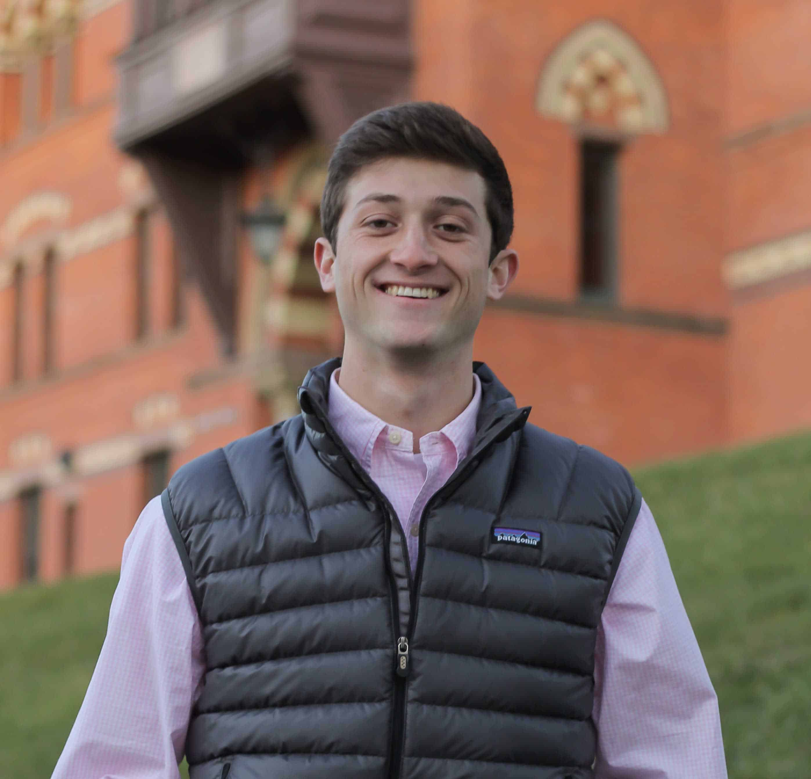
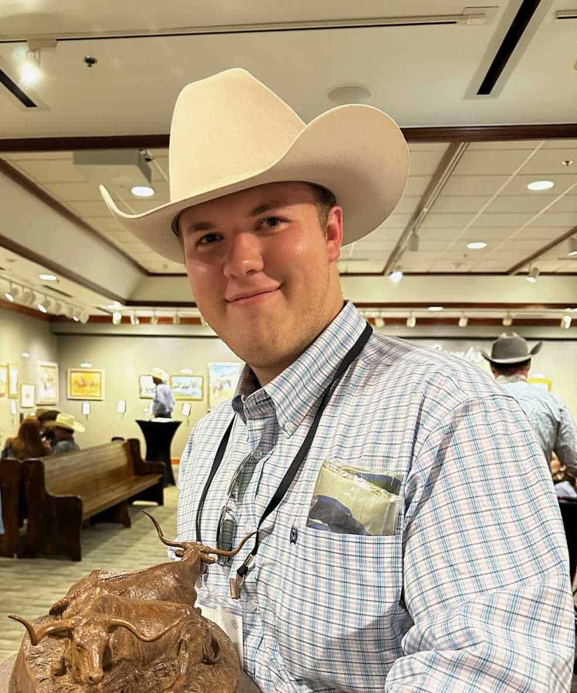
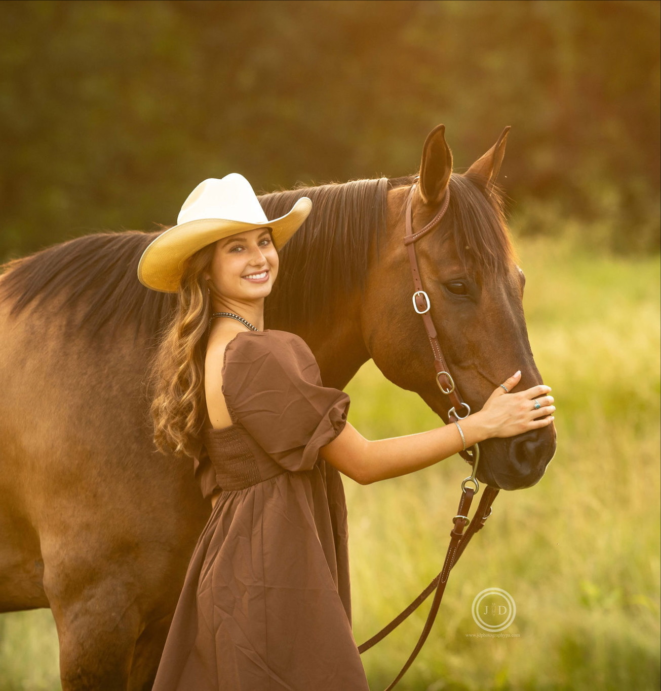
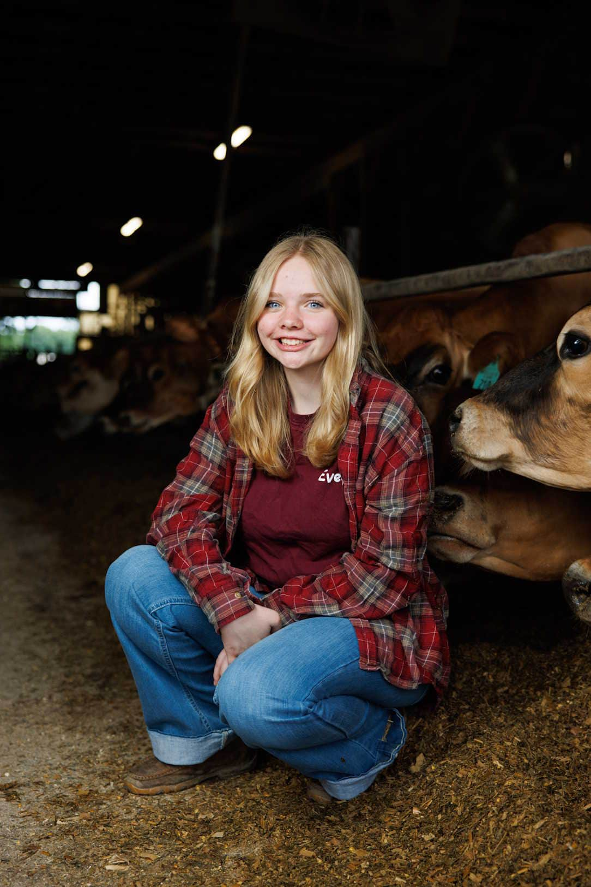

Executive Board
Meet the leaders driving our club forward!

Charlie Moser
President
- Major: Agricultural Science
- Concentration: Humanities
- Minor: Anthropology
- Year: Junior
- Hometown: Bedford, VA
- Email: csm265@cornell.edu
I plan to focus on expanding the membership and engagement of the club by organizing and hosting a greater number of in-person workshops and events throughout the semester. These gatherings will be designed to offer hands-on learning experiences, foster networking opportunities, and build a stronger sense of community among members.

Aidan McDonald
Vice President
- Major: Agricultural Science
- Minor: Applied Economics
- Year: Junior
- Hometown: Lazbuddie, TX
- Email: arm345@cornell.edu
Cook great steak for Sigma Alpha’s Art of Ag event!
Wyatt Marshall
Secretary
- Major: Agricultural Science
- Concentration: Business
- Year: Freshman
- Hometown: Weyers Cave, VA
- Email: jwm363@cornell.edu
I want to increase the diversity and frequency of guest speakers at meetings, with a focus on inviting experts from various sectors of beef production.

Ciera Wolff
Public Relations
- Major: Animal Science
- Concentration: Pre-Vet
- Minor: Sustainable Agricultural Food Systems
- Year: Freshman
- Hometown: Hershey, PA
- Email: cgw58@cornell.edu
I aim to raise public awareness and understanding of the beef industry by sharing valuable information, addressing misconceptions, and highlighting the importance of beef production in our food system. Through targeted outreach and engagement efforts, I also seek to encourage more individuals to become involved in the club

Evelyn Kersmanc
Public Relations
- Major: Animal Science
- Year: Freshman
- Hometown: Worcester, NY
- Email: egk49@cornell.edu
I would like to develop and implement a comprehensive communication strategy to enhance the visibility of the club. This includes managing the club's social media presence, creating regular content to inform and engage both current members and the public, and building partnerships with external organizations.
Vincent Nguyen
Treasurer
- Major: Computer Science
- Year: Freshman
- Hometown: Richmond, VA
- Email: vln23@cornell.edu
As an Arts & Sciences student, I want to expand the Beef Cattle Club by promoting it to students beyond CALS. As treasurer, I aim to secure funding for exciting club events and design a brand-new website to increase awareness and engagement!